一枚ずつ探す必要はありません。サブフォルダーまで含め、アーカイブのすべてを解き放ちます。
CHOOSE WHAT MATTERS TO YOU
守りたいものから、DearSceneを選ぶ。
家族の記録、作品アーカイブ、事業の実績、空間の演出。使う人によって大切なことは違うから、DearSceneは四つの視点から確かめられます。
FOR FAMILIES思い出は守ったまま、
作品の主役を守り、
止めたくない場所で、
一枚のパノラマを、
思い出は守ったまま、
暮らしの中へ。
写真も動画も元ファイルを変更せず、フォルダーを選ぶだけ。家族や旅の記録を安心して再発見できます。
元ファイル非変更かんたん操作写真＋動画
FOR CREATORS作品の主役を守り、
次の着想へ。
顔、ピント、特徴色を見ながら構図を整え、RAWを含む大きな制作史から見逃していた価値を拾います。
スマート構図RAW対応20ルック
FOR BUSINESS止めたくない場所で、
静かに伝え続ける。
商談、ショールーム、待合空間へ。ローカル再生と先読みが、実績や製品を自然に見せ続けます。
ローカル再生安定再生全画面
FOR SPACES一枚のパノラマを、
三つの窓へ。
縦短冊、メイソンリー、複数画面。モニターや壁面を、写真と動画が息づく展示へ変えます。
縦短冊複数起動プロジェクター
偶然の一枚が、
記憶をひらく。
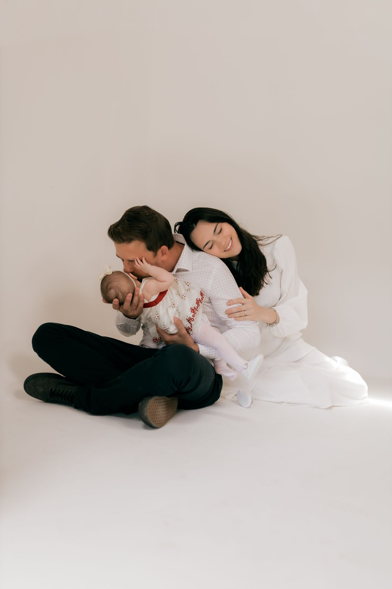
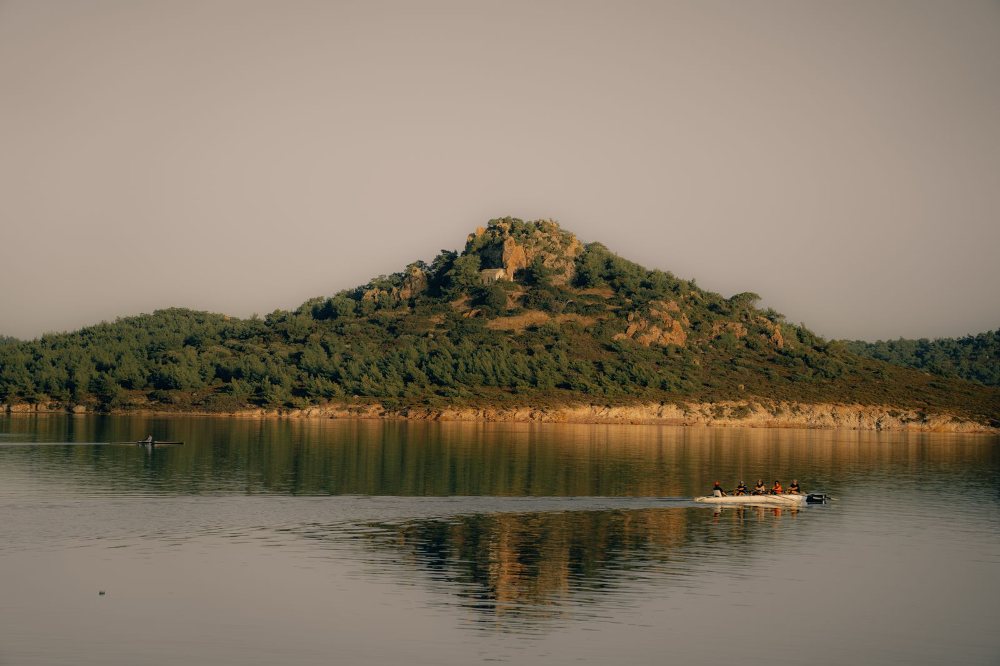
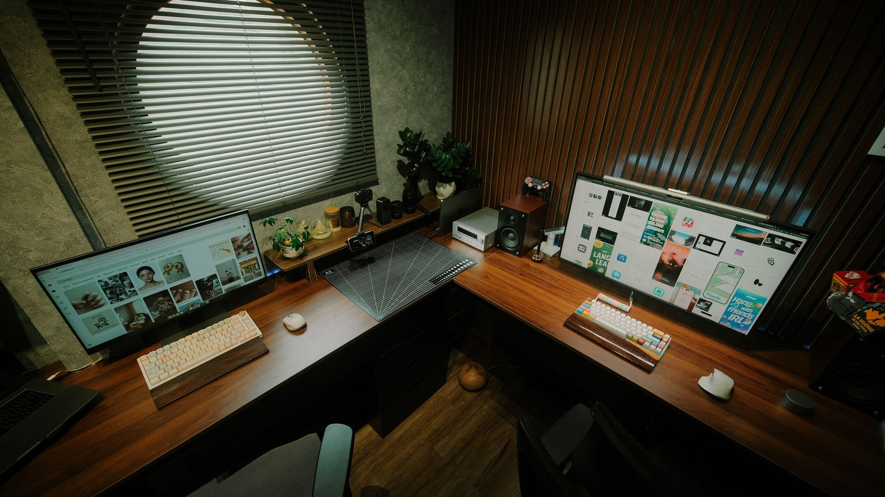
整理はいらない。
再会するだけ。
再会するだけ。
写真も動画も、元ファイルには触れない。DearSceneが変えるのは、鑑賞の流れだけです。
顔、ピント、特徴色の順に注目点を探す。極端な画面比率でも、作品の中心を守り抜きます。
ゆっくり始まり、なめらかに進み、余韻を残して止まる。写真を見る時間を、決して邪魔しません。
REDISCOVER YOUR ARCHIVE
眠っていた一枚が、
眠っていた一枚が、
また人生を動かす。
フォルダーを選ぶだけで、大量の写真と動画が新しい順序と構図で流れ始めます。検索も整理もいらない。忘れていた一枚が、もう一度、物語の中心へ戻ってきます。
TV、モニター、プロジェクターへ、それぞれ異なるライブラリと表現を。
静止画と動画を分けずに選び、ひと続きの時間として再生。
JPG、HEIC、RAWからMP4、MOVまで、日常と作品制作で使う形式をひとつのライブラリへ。1
大規模ライブラリのための、固定上限を設けない設計。
PHOTO · 28JPG · JPEG · PNG · BMP · GIF · TIF · TIFF · WEBP · HEIC · HEIF · AVIF · JXL · JP2 · J2K · EXR · HDR · JXR · DDS · ICO · ARW · CR2 · CR3 · NEF · DNG · RAF · ORF · RW2 · PEF
VIDEO · 11MP4 · M4V · MOV · AVI · WMV · MPG · MPEG · MKV · WEBM · MTS · M2TS
PRIVATE BY NATURE
思い出は、
思い出は、
あなたの場所に残る。
DearSceneは、選んだフォルダーをこのPCの中で読み取ります。クラウドへのアップロードも、ライブラリの複製も不要。お気に入りと非表示は、写真や動画とは別のDearScene専用リストへ、ファイルの場所だけを記録します。画像の中身、ファイル名、保存場所には触れません。
LOCAL PLAYBACKNO UPLOADORIGINALS UNTOUCHED
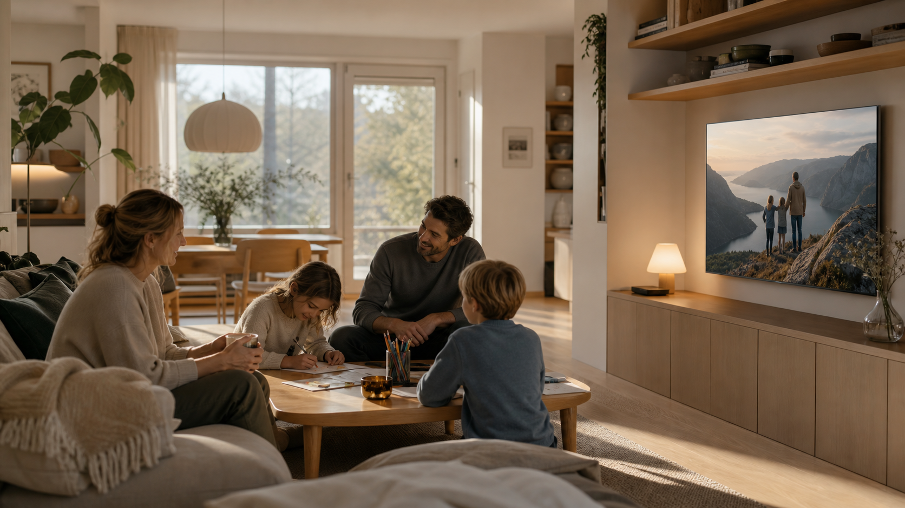
HOME
子どもの成長も、
あの旅の光も。
撮ったまま眠っていた家族写真を、リビングの風景へ。毎日が、忘れていた記憶との小さな再会になります。
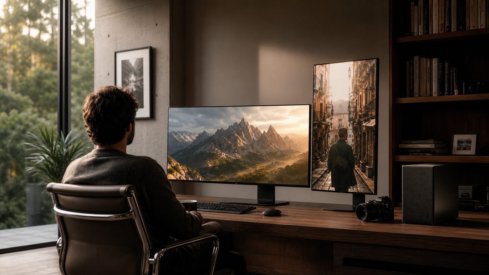
CREATOR
傑作にも、
ボツにしていた一枚も。
完成作も、選ばなかった作品も、ひとつの制作史です。流して眺めれば、当時は見逃した価値が、次の着想へ変わります。
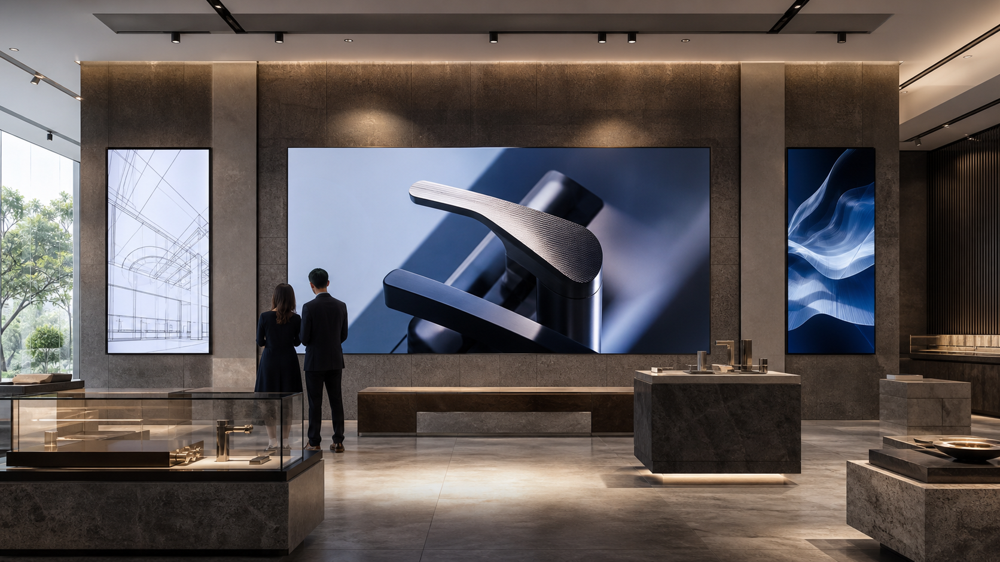
BUSINESS
語らなくても、
実績は伝わる。
会社やショールームの空気を、ブランドの世界観で満たす。商談の最中にも、製品と実績が静かに語り続けます。
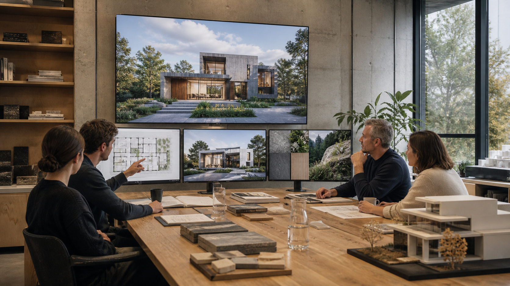
PROFESSIONAL
資料の山を、
次のひらめきへ。
建築、デザイン、教育、研究の資料群を、生きたイメージボードへ。過去の蓄積が、思考と対話を動かします。
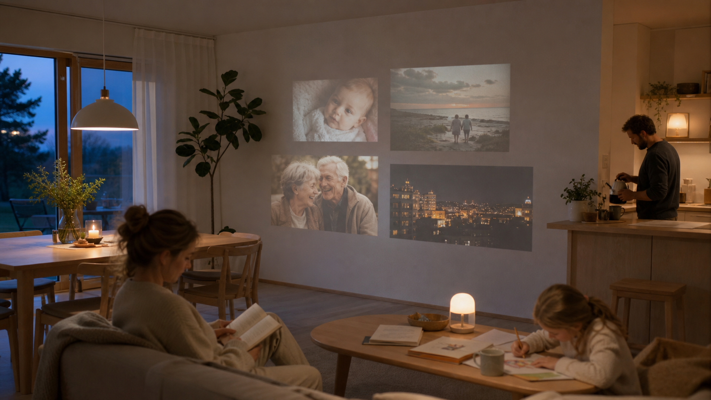
AMBIENT
探すのをやめる。
発見が始まる。
お気に入りを選び直す必要はありません。未鑑賞を優先しながら、アーカイブ全体が偏りなく巡り始めます。
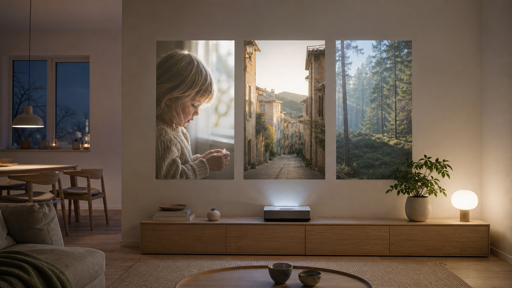
SPACE
ただの壁を、
忘れられない景色へ。
ホテル、店舗、待合室、イベント空間を、静かなデジタル展示へ。縦画面もプロジェクターも、空間の新しい窓になります。
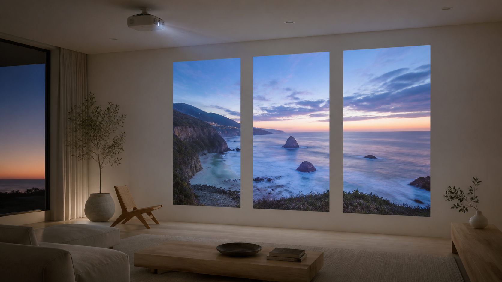
WINDOW
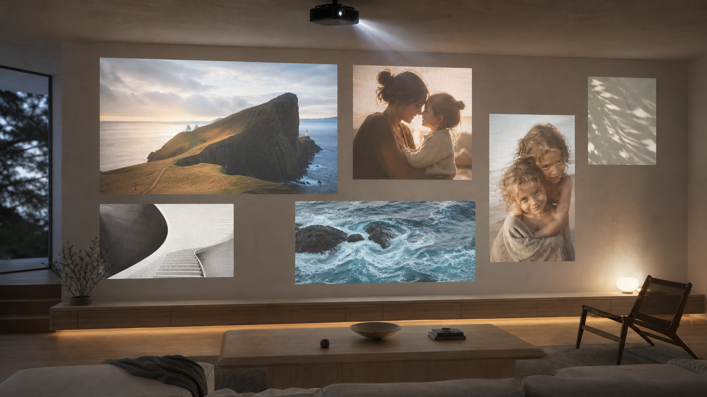
WALL
SIMPLE BY DESIGN
選ぶのはフォルダー。
選ぶのはフォルダー。
手に入るのは、再発見。
DearSceneは、ローカルの作品アーカイブを整理し直さず、そのまま再生します。顔、ピント、特徴色を見ながら構図を整え、写真と動画を、暮らしや仕事の中心へ戻します。
01 · ASPECT
どんな縦横比も、
どんな縦横比も、
作品の味方に。
縦写真を横長のTVへ、パノラマを縦置きモニターへ。画面いっぱいに見せるスマート構図と、作品全体を残すぼかし背景から、写真と動画それぞれに合う見せ方を選べます。ウィンドウの大きさを変えても、構図はその場で整い直します。
写真・動画を別々に設定作品全体を表示画面いっぱいに構図
16:9 · BLUR FILL
ANY WINDOW · SMART CROP
02 · MULTI LAYOUT
一枚ずつも、
一枚ずつも、
響き合うギャラリーも。
メイソンリーは、縦写真を縦の枠へ、横写真を横の枠へ。3:4、黄金比、16:9を組み合わせ、3・5・7枚の作品がひとつの画面で美しく響き合います。
短冊は、縦へ2〜5分割。作品ごとに並べることも、パノラマ写真や横長動画を一作品のまま、均等な隙間を挟んだ三つの窓として連続表示することもできます。
次のページは画面の外で先に準備。ゆっくり動き出し、なめらかに進み、余韻を残して止まります。3
3・5・7枚のメイソンリー縦短冊 2〜5分割パノラマを縦3面へ
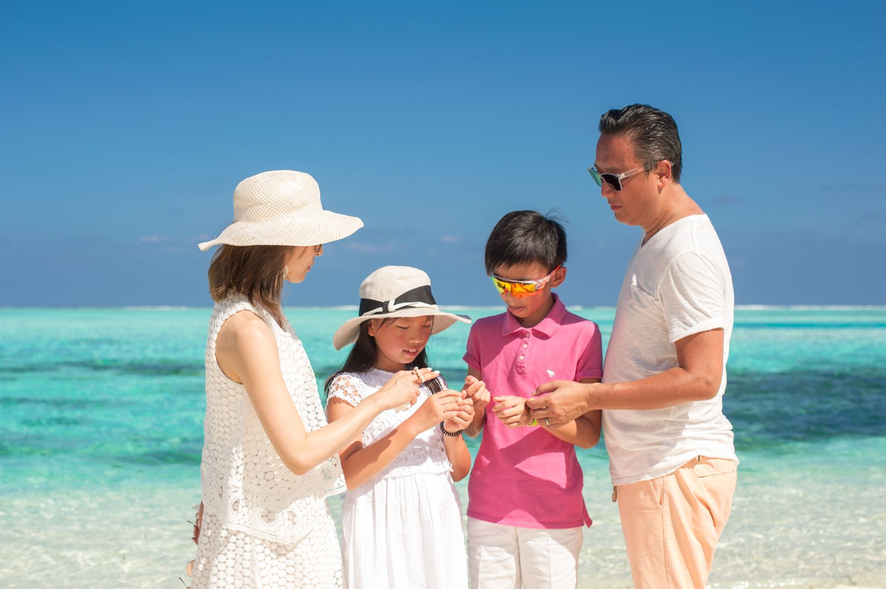
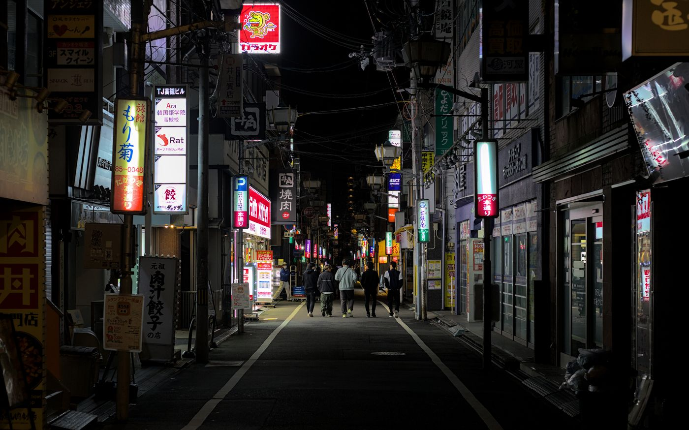
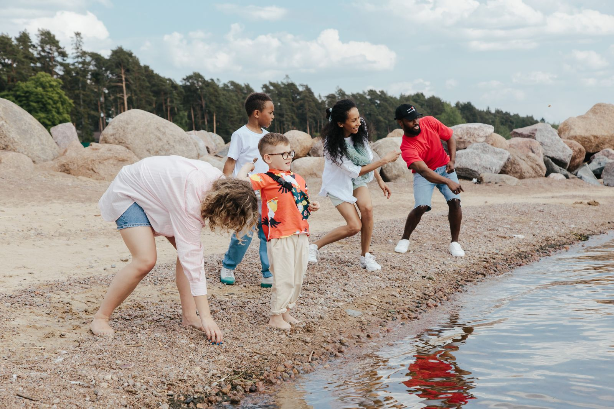
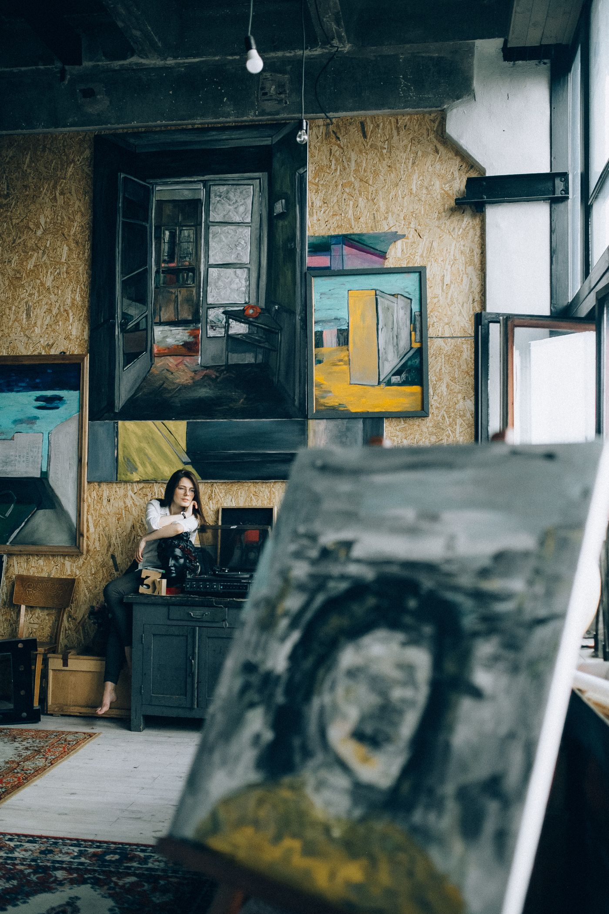
ONE PHOTO
PANORAMA · 3 VERTICAL STRIPS
03 · SMART COMPOSITION
主役を見つける。
主役を見つける。
最後まで、離さない。
人物、イラスト、動物の顔を最優先に、ピントの合った場所、特徴的な色へと視線を導きます。背景を大きくぼかした写真でも、小さな主役を探して構図の中心へ。
短冊のような細い画面でも、始まりから終わりまで主役が見える範囲を守ります。写真の動きは、作品を見せるために働きます。4
顔を最優先端末内で構図を判断主役を画面内に保つ
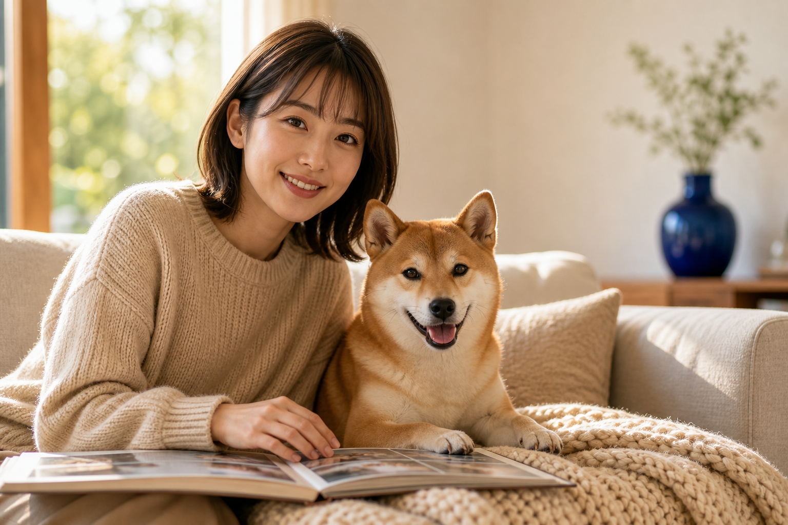
1人の顔1動物の顔2ピント位置3特徴的な色
04 · FILM LOOKS
同じ一枚に、
同じ一枚に、
まったく新しい温度を。
カラー、白黒、モダンカラー、フィルムルックまで20種類。強さを調整しながら再生中にも切り替えられます。日常写真で親しまれてきたClarendon、Juno、ValenciaをDearSceneらしく整えたルックも選択できます。
選んだルックだけを1〜999枚ごとにランダムで巡らせれば、見慣れた写真にも新しい気配が生まれます。
20 Presets1–999枚ごと非破壊
ORIGINAL
CLARENDON POP
JUNO WARM
VALENCIA SUN
05 · TIME & TRANSITION
切り替わる一秒まで、
切り替わる一秒まで、
美しく。
写真は標準15秒。手早い1秒から、作品をじっくり見る3600秒まで設定できます。動画は全編または冒頭の指定秒数を再生し、音声は初期状態でミュート。8種類の滑らかな切り替えが、写真と写真の間にも余韻をつくります。
15 SEC Default8 TransitionsVideo Muted
SMOOTH
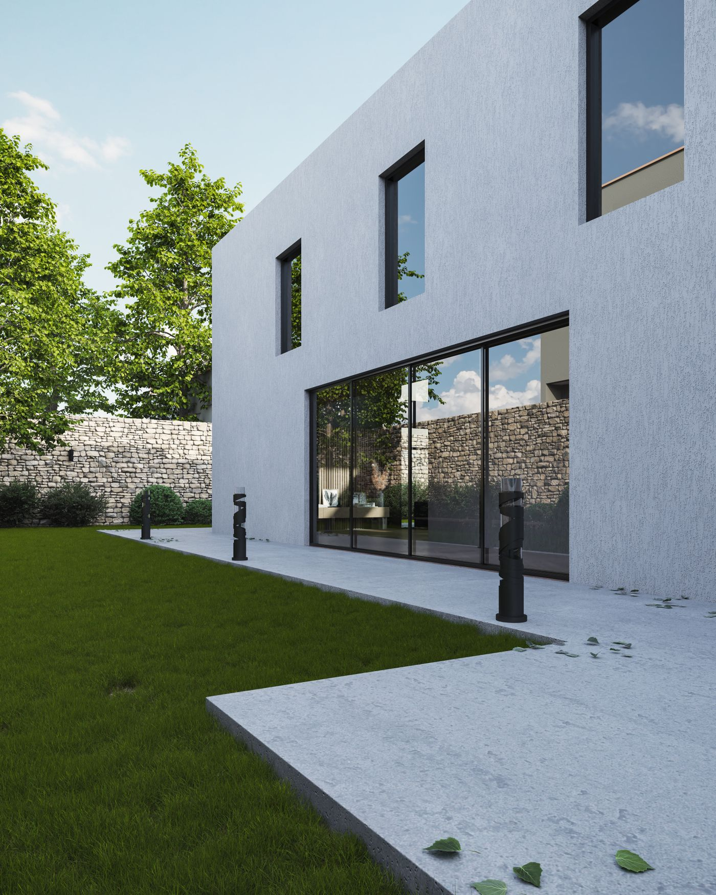
FILMSLIDE
CUT
06 · REDISCOVERY
忘れていた一枚が、
忘れていた一枚が、
次の発見になる。
ランダムは一巡するまで同じファイルを繰り返しません。順番通り、未鑑賞優先、おすすめも選択可能。気になった一枚はハートボタンまたはLキーでお気に入りへ。見せたくない写真は元ファイルを消さずに隠せます。
DearSceneが保存するのは、専用リストに記録したファイルの場所だけ。お気に入りにしても、画像や動画そのもの、ファイル名、フォルダー構造を書き換えません。大切なライブラリは、これまで通りの姿で残ります。
No Repeat未鑑賞優先元ファイル非変更
RANDOM
一巡するまで重複せず、開始位置もシャッフル。
SEQUENTIAL
フォルダーとファイルの流れを保って順番に。
FOR YOU
未鑑賞と異なるフォルダーを優先して再発見。
♡ お気に入り⊘ 非表示↶ 元に戻す
07 · PHOTO + VIDEO
写真も、動画も。
写真も、動画も。
もう、分けなくていい。
静止画と動画をひとつの再生列へ。写真だけ、動画だけ、使いたい形式だけにも絞れます。大量のライブラリでも、撮影機材や年代をまたいで一度に眺められます。
写真にはスマート構図やフィルムルックを。動画には全編表示やぼかし背景、ミュートを。メディアごとに見せ方を選び、静けさと動きを自然につなげます。
画像 28形式動画 11形式写真・動画を別々に設定
PHOTORAWSMART CROP
VIDEOFULL FRAMEMUTED
08 · ALWAYS READY
次の一枚は、
次の一枚は、
見えない場所で、もう準備済み。
次に見せる写真や動画を画面の外で先に準備。読み込みに時間がかかる動画や壊れたファイルがあっても、表示できる写真へ切り替え、今見ている作品を急に消しません。
再生が止まりそうな時は自動で別の読み込み方へ。長尺動画や低速なUSB HDDを使う時も、スライドショーが続くことを優先します。
再生中のフォルダーへ新しい写真が追加されたら、保存が終わった後に自動で候補へ。複数の画面で同じHDDを使う環境にも配慮しています。5
次の作品を先に準備表示できる写真へ自動切替新しい写真を自動追加
CANDIDATEDSC_2041.RAWbroken.webmtrip_043.mp4
READY01 · PHOTO02 · PHOTO03 · VIDEO
PLAYFRAME HELD次の表示まで維持
USB HDD
複数画面に配慮長尺動画
写真へ自動切替LIVE FOLDER
保存後に自動追加
複数画面に配慮長尺動画
写真へ自動切替LIVE FOLDER
保存後に自動追加
09 · PRODUCT GLASS
操作は消える。
操作は消える。
作品だけが残る。
大きなアイコンと文字、タッチしやすい操作領域、迷わない4カテゴリ。ダブルクリックでWindowsのタスクバーまで覆う全画面へ。鑑賞中は操作部もカーソルも静かに消え、次に開いた時は前回の設定から始められます。
タッチしやすい操作タスクバーまで全画面設定を保存
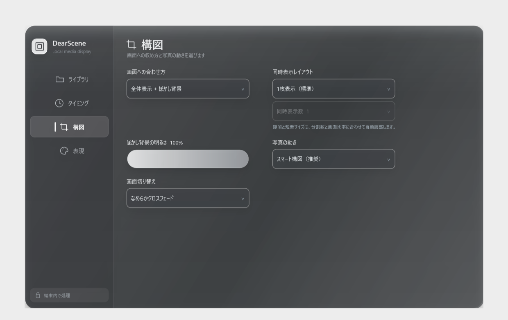
構図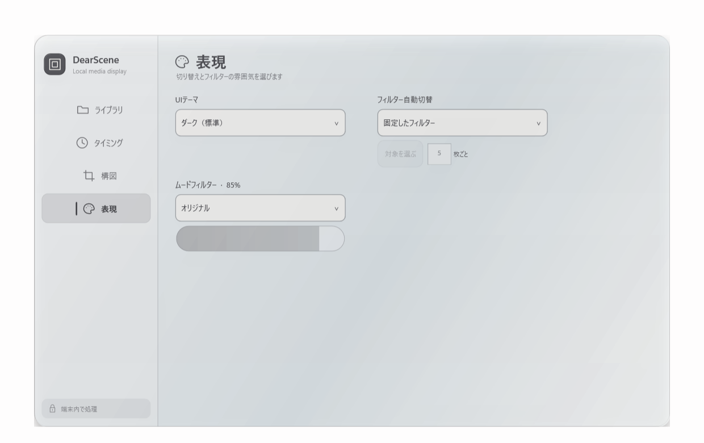
LIGHT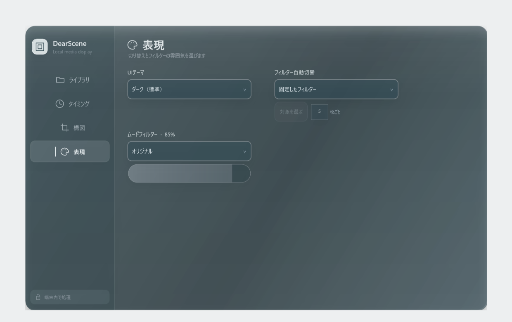
CUSTOM画像を探さない。
フォルダーを選ぶ。
画像や動画が見える末端フォルダーまで開き、「現在のフォルダーを選択」を押します。サムネイルは場所の確認用です。ファイルを一枚ずつ選ぶ必要はありません。
1中身を確認
末端フォルダーでも写真・動画のサムネイルが見えるので、再生したい場所か確認します。
2フォルダーを指定
「現在のフォルダーを選択」を押します。別階層へ移動して追加し、複数フォルダーもまとめて指定できます。
3再生
まずは標準設定で。構図、時間、表現は鑑賞中にも変えられます。
MEDIA THUMBNAILSMULTI FOLDERSELECTED LIST親フォルダーはサブフォルダーも対象
ホーム\ピクチャ\家族の思い出\2026年
このPC
ピクチャ
家族の思い出
2026年
旅行
作品
家族の日曜日.jpg
夏の旅行.mp4
湖畔の朝.jpg
海辺の午後.jpg
夜の散歩.jpg
作品アルバム.jpg
選択済みフォルダー
1件
1件
2026年×
現在の選択を外す1件を適用
DEARSCENE v1.22 BETA
あなたのアーカイブを、もう一度、生きた景色へ。
Windows 10／11 x64向けのプレリリースです。試した感想も、うまくいかなかった瞬間も、次のDearSceneをつくる大切な手がかりになります。
ベータ版のため、重要な写真・動画は元の場所に保持したままご利用ください。DearSceneは元ファイルを移動・編集しません。DearScene